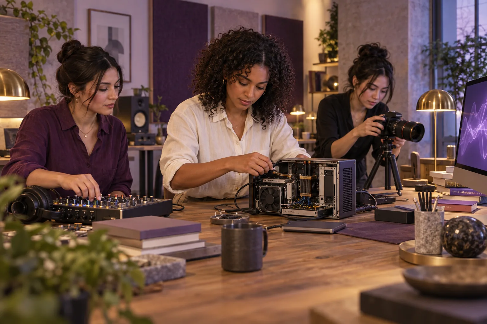

Intelligence
we can share.
Personal tools, shared computing and scientific collaboration can help women build enterprises with lasting public value.
Start with what people need to do
Trustworthy AI connects personal development, executive learning, care, creativity and long-term civilisation planning. The questions are practical: who owns productive intelligence, who can use it and who receives the benefits? The proposed programme places human capability and shared prosperity at the centre.
A leadership participant might need to compare a budget, prepare a decision brief or rehearse a presentation. A creative team may need editing, rendering and translation. Researchers may need to examine sensor data or run a materials model. Begin with those workloads, the people doing them and the result that would be useful.

AI-generated concept illustration.
A connected range of computing
The missing middle of computing connects personal devices with local shared services, regional and national systems, and cloud services. Each has a role. Local control can help people choose what they share, what remains private and which services fit their work.
Ready S.E.T. Co-op's proposed Cultural Intelligence Node explores this through media production, local models, digital twins, fabrication and environmental observation. The Dunwich rack is a reference proposal with its own engineering and financial case. A Brisbane incubator would choose and price the access it actually needs.
From access to a useful result
| Work | What shared intelligence could help produce |
|---|---|
| CEO development | Source-based research, an AI Queens rehearsal and a reviewed decision brief. |
| Creative enterprise | Editing, rendering or translation for a client-ready production. |
| Science and engineering | A materials model, sensor analysis or reproducible experiment. |
| Local business and resilience | Scheduling, a service map or a tested continuity arrangement. |
An enterprise family to explore
The original Aura ideas include Innovation Labs, Universal Translation, AI In-Home Auto-Farms, Smart Pod Hotels, Entrepreneurs Co-Living, Clothing and Wellness, Entertainment, Travel, the Affinity Marketplace and Gamify Democracy. Personalised disability and aged-care support is another proposed field.
Each needs a present-day service brief: intended users, the work to be done, suitable technology and a benefit that can be tested. In a care project, participants would work with practitioners and intended users. AI can support research, simulation and preparation while those people shape the service and its responsibilities.
Price the work and preserve the evidence
Compare purchased access, an institutional arrangement and a locally operated node. Count computing, software, storage, power, cooling, maintenance and people. The cheapest equipment price alone does not describe the cost of a usable service.
The Sensorium concept links Earth-space observations, simulations and open scientific debate. Alongside Virtual Solar Swarm, space-weather research and Extreme Matter Atlas, it suggests enterprises built around preserved data sources, competing explanations and reproducible tests.
Ready S.E.T. connects equipment with paid work and training. Mutual Futures connects productivity with ownership and freedom over time. Record agreed uses of cultural material and measure output, errors, cost and benefits returned to participants. Those results show whether shared intelligence is making daily life better.